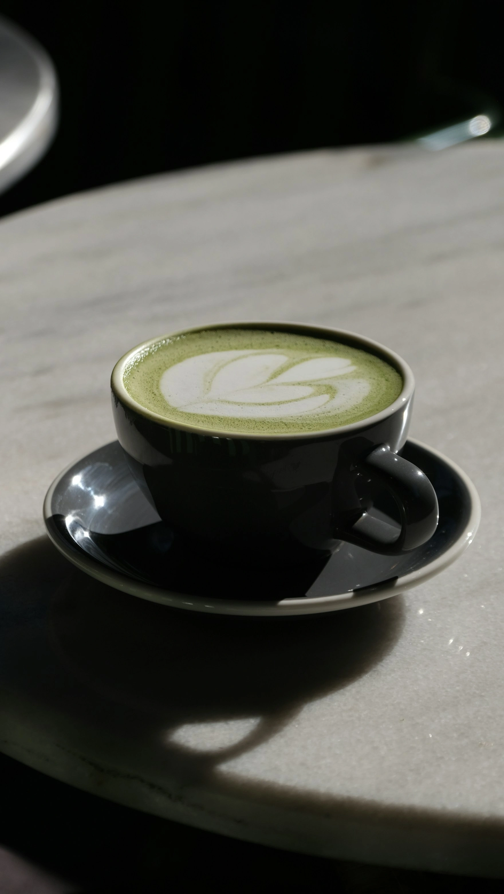

Matcha kan meget mere end at blive drukket som klassisk te. Den friske grønne smag og de mange fordele gør den perfekt i alt fra lattes og smoothies til kager og cocktails. Her finder du inspiration til både enkle hverdagsopskrifter og kreative kreationer, der bringer matchaens unikke karakter frem på nye måder. Uanset om du er ny i matcha-universet eller allerede fan, kan du opdage, hvor alsidig denne grønne super-ingrediens egentlig er.
Matcha er mere end bare te – det er ro, energi og smag i samme kop. Udforsk hvordan du kan bringe denne grønne super-ingrediens ind i din hverdag gennem både klassiske drikke og kreative opskrifter. Lad dig inspirere og find nye favoritter.

Matcha er også et øjebliks pause. Når du pisker dit pulver, skummer mælken eller nyder en stille kop, skaber du plads til ro og nærvær i hverdagen. Lad matcha blive dit daglige zen-øjeblik.
